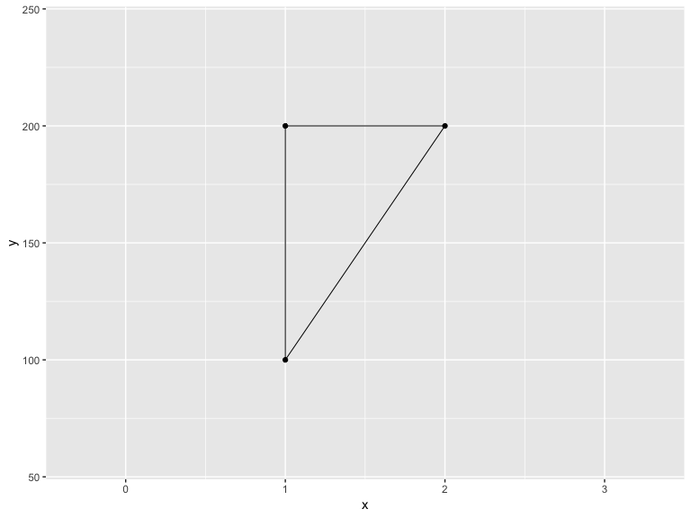
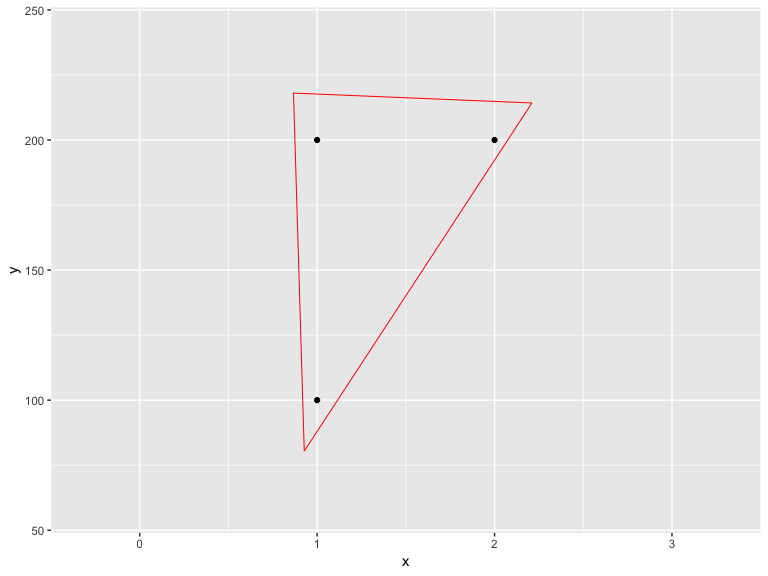
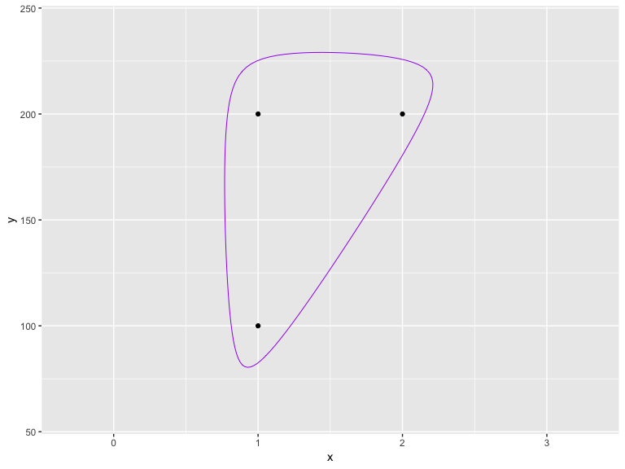
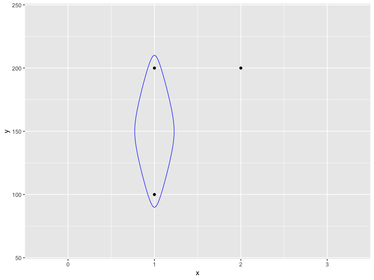
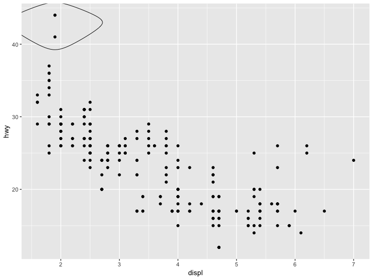
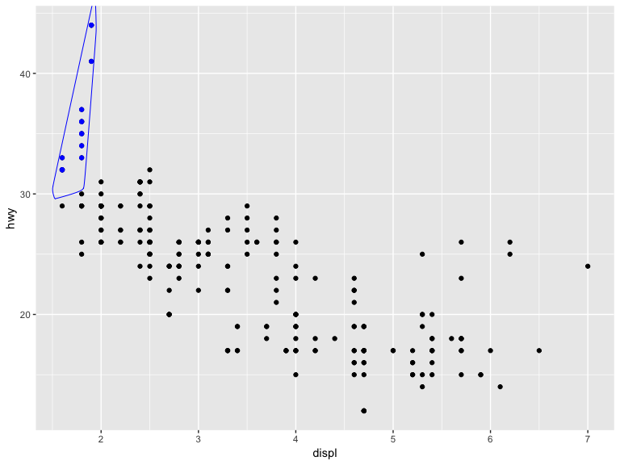

Encircling points automagically
d <- data.frame(x=c(1,1,2),y=c(1,2,2)*100)
gg <- ggplot(d,aes(x,y))
gg <- gg +
scale_x_continuous(expand=c(0.5,1))
gg <- gg +
scale_y_continuous(expand=c(0.5,1))
gg +
geom_encircle(s_shape=1, expand=0) +
geom_point()





ss <- subset(mpg,hwy>31 & displ<2)
gg +
geom_encircle(data=ss, colour="blue", s_shape=0.9, expand=0.07) +
geom_point() +
geom_point(data=ss, colour="blue")